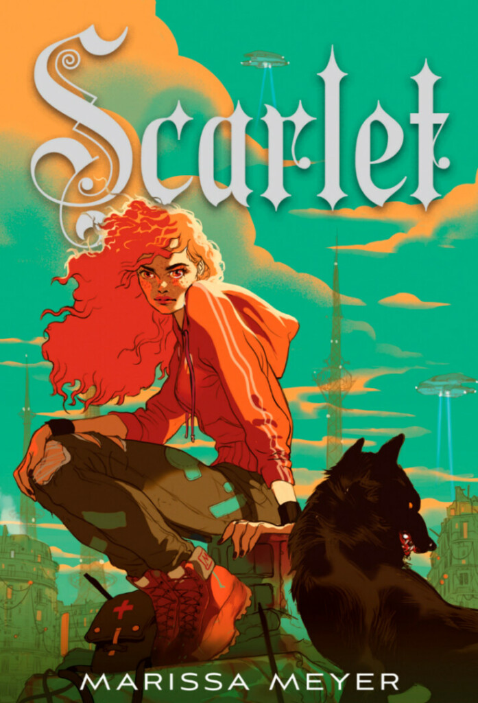
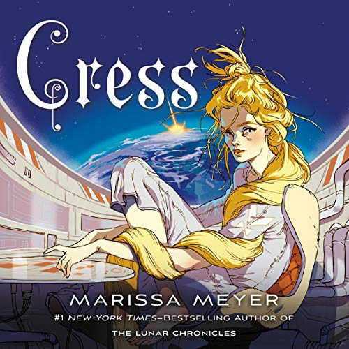
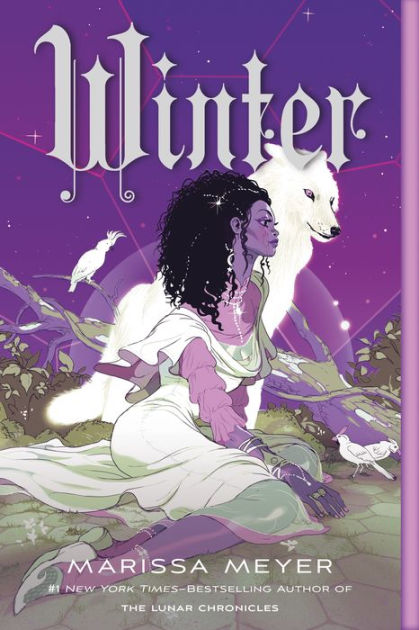
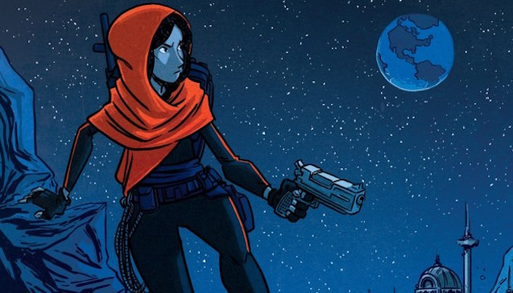
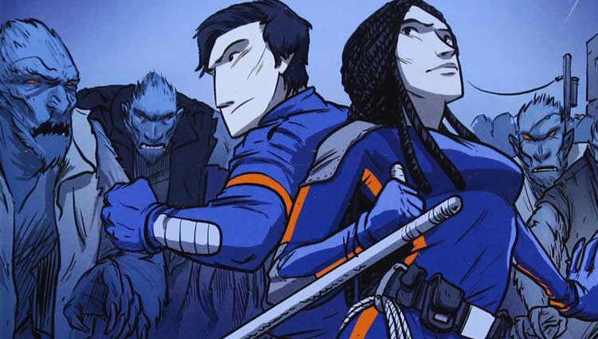

Cinder es el primer libro de la saga Las Crónicas Lunares por Marissa Meyer. Trata sobre la joven Linh Cinder, basado en el cuento de hadas la Cenicienta por los Hermanos Grimm Jacob y Wilhelm Grimm
Humanos y androides llenan las calles estridentes de Nueva Beijing. Una plaga mortal invade a la población. Desde el espacio, las personas Lunares miran, esperando a hacer su movimiento. Nadie sabe que el destino de la Tierra depende de una niña. Cuando Cinder se entrelaza con el guapo Príncipe Kai, de repente se encuentra a sí misma en el centro de una lucha intergaláctica y una atracción prohibida. Atrapados entre el deber y la libertad, la lealtad y la traición, ella debe descubrir secretos sobre su pasado con el fin de proteger el futuro de su mundo.
Un joven cyborg mecánica y la protagonista principal de Las Crónicas Lunares
Scarlet es el segundo volumen de la saga Las crónicas lunares. Es un retelling de Caperucita roja.
La abuela de Scarlet ha desaparecido sin dejar rastro. Ella sospecha que la han secuestrado, así que cuando la policía renuncia repentinamente a seguir con la investigación, toma la decisión de continuar la búsqueda por su cuenta, aunque ello implique introducirse en los bajos fondos de su ciudad... Allí tropieza con Wolf, un feroz luchador callejero que se empeña en ponerle las cosas difíciles. Pero Scarlet no es el tipo de chica que se amedrenta ante un matón, por muy atractivo que sea, así que, cuando se da cuenta de que él puede ser la única conexión con los secuestradores de su abuela, no duda en pedirle ayuda. Juntos deberán sumergirse en el oscuro y peligroso mundo de la mafia y descubrirán que su historia está irrevocablemente unida a la de Cinder, una ciborg que se encuentra en busca y captura en todo el planeta. Mientras Scarlet y Wolf intentan desentrañar el misterio, se encuentran con Cinder, y ahora, todos juntos, deben luchar contra la reina lunar Levana. Las Crónicas Lunares continúan en esta nueva entrega que combina elementos de La Cenicienta y Caperucita Roja.
Cress es el tercer volumen de la saga «Las crónicas lunares» basado en el cuento de Rapunzel.
Cress es una chica de dieciséis años que ha vivido toda su vida encerrada en un satélite, sin más compañía que las pantallas que la rodean. Atrapada en esta prisión se ha convertido en una hacker estupenda, pero sus captores la fuerzan a emplear sus habilidades para ayudar a la malvada reina Levana a encontrar a Cinder y entregarla a su majestad. Sin embargo, cuando Cress da con Cinder y su acompañante, el Capitán Thorne, los fugitivos le ofrecen una alternativa que no puede rechazar: si ella les ayuda a boicotear los planes de Levana para casarse con el emperador Kai, Cinder y Thorne (juntamente con Scarlett y Wolf), rescatarán a Cress de su confinamiento. Ahora bien, tras el fallido intento de rescate, el grupo se divide: Cress consigue su libertad, pero a cambio de un precio mucho más alto de lo que había previsto. Mientras tanto, Levana estaa empecinada en que nada ni nadie le arruine su boda con el emperador Kai. ¿Qué será capaz de hacer con tal de cumplir su objetivo?
Había una vez... una joven princesa que era tan hermosa como la luz del día; que era aún más hermosa que la propia reina. Winter es la cuarta entrega de la saga Las Crónicas lunares, basado en el cuento de Blancanieves.
Cinder y sus compañeros lograron suspender la boda real. El nuevo plan es lograr lo imposible: la rebelión en Luna, pero un solo paso en falso puede acabar con la vida y los sueños de todos. Lo que Cinder aún no sabe es que en Luna encontrará una aliada decisiva: una joven que con su belleza y su bondad puede ser la clave para destronar a la reina Levana. ¿Será Winter, la muchacha frágil e ingenua, la que les muestre a los lunares que existe una vida más allá de la manipulación y del terror? En el último tomo de Crónicas Lunares, Marissa Meyer cierra maravillosamente una historia que te mantuvo en vilo, te enamoró de sus protagonistas y te hizo desear el tan esperado "y vivieron felices por siempre".
En su primer novela gráfica, la escritora de bestsellers Marissa Meyer sigue a Iko, la amada androide de las Crónicas Lunares, en una peligrosa y romántica nueva aventura, con un poco de ayuda de Cinder y el equipo lunar. Cuando un grupo de soldados híbridos con lobos rebeldes amenaza la reciente alianza pacífica entre la Tierra y Luna, Iko hace su misión cazar al líder de los soldados. Ella pronto empieza a trabajar con un guapo guardia real que la fuerza a cuestionar todo lo que sabe de amor, lealtad y su propia humanidad. Con apariciones de Cinder y el resto del equipo de Raption, esta es una obra que todos los fans de la serie deben tener.
El mundo de las Crónicas Lunares vuelve a cobrar vida en esta emocionante continuación de Wires and Nerve. Iko y Liam Kinney deberán atrapar a Lysander Steele y su manada rebelde antes de que destruyan el frágil acuerdo de paz entre la Tierra y Luna. Cinder y Kai, Scarlet y Wolf, Cress y Thorne, Winter y Jacin son parte de esta épica batalla. Pero es Iko quien deberá enfrentar sus miedos más profundos. Las preguntas sobre el amor, la amistad y la mortalidad llevan a Iko a un viaje emocional que cautivará a los lectores.
